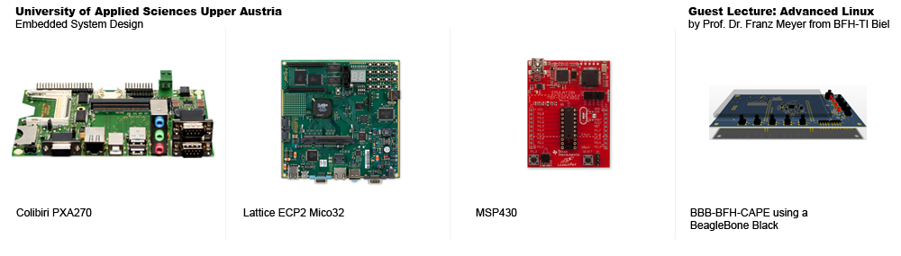
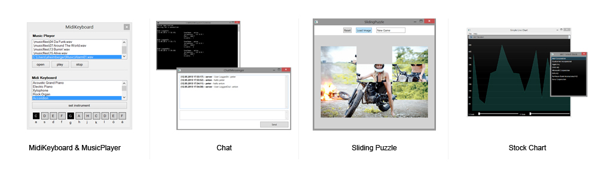

Master Degree: Embedded System Design
cat: university
I finished my master’s degree in Embedded Systems Design at the University of Applied Sciences, Upper Austria. In the master program we had some further courses like advanced mathematics, digital signal processing, embedded robotics, industrial software development, sensors and actuators and embedded software development. Next to all of the theory I collected once more a lot of experience through different exercises on different hardware platforms, which are shown below.

The Colibri PXA270 board was used during the course Embedded Operating Systems, where we were developing drivers under Linux and WinCE.
The LatticeECP2 was used in the course Hardware Software Codesign. Goal of this course was it to understand SystemC, differences between CycleCallable, Loosely and Approximately Timed and to implement a Cordic Core, which ran at the end on the hardware platform.
We used two MSP430 with a CAN-Bus Breakout Board in the course Distributed Real Time Systems. Goal of this course was it to create a control loop, measure the end-to-end delay between the two boards and to create a time triggered protocol.
Again I visited the course Advanced Linux held by Prof. Dr. Franz Meyer from the BFH-TI Biel. I made this course also in Bachelors, but this time he had another hardware. He brought a BeagleBone Black with a breakout including buttons, led’s, a pot and a LCD display. Goal of this course was it to understand Linux cross development, sysfs, device drivers and interrupts.
Furthermore, we had a course about software development in C# and learned how to create graphical user interfaces using the Windows Presentation Framework. We made several applications like a midi keyboard, a chat, a sliding puzzle or a chart stock.
